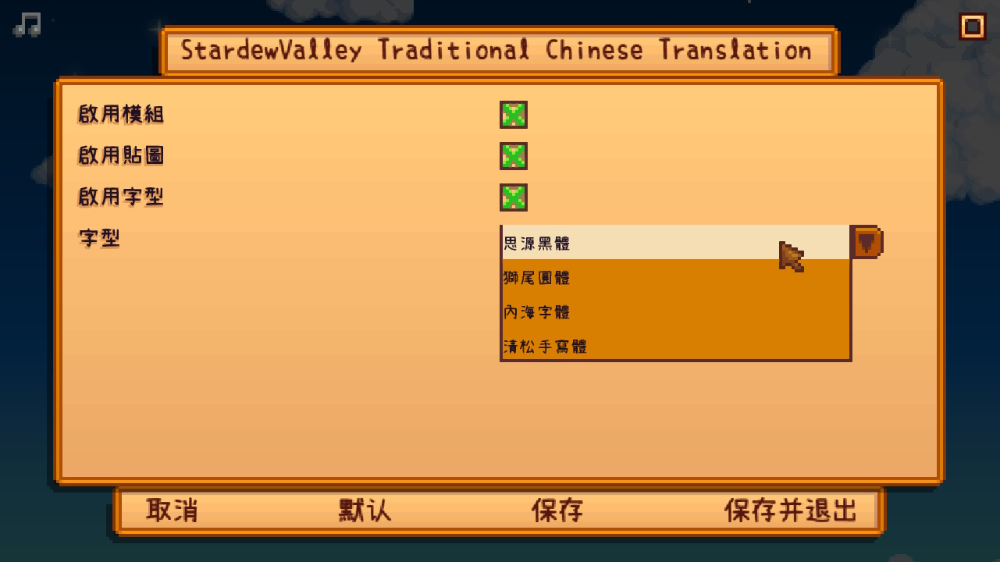

模組預覽
字型比較
遊戲內容
點選圖片或將游標移至圖片上可檢視與官方中文的差異。


特別感謝
- 歷代正體中文模組作者
- 星露谷社群貢獻者
- 免費字型
- 官方簡體中文
- HTML5 UP 網頁模板
聲明
- 禁止將本模組用作商業用途（實況除外）。
- 禁止擅自轉發本模組及相關檔案。
- 任何財物損失或糾紛，本團隊一概不負責。
- 實況請於資訊欄附上說明及網站連結，可點選下方按鈕複製網址。
複製網址
參與成員
- 午仔魚博士（DrWoose）
- 海餐（Seacucu）
- Voico
安裝模組
| 裝置 |
遊戲版本 |
模組版本 |
| PC |
1.6.8 |
1.6.2 |
| SMAPI |
Content Patcher |
| 4.0.8 |
2.2.0 |
安裝
其他
點選圖片或將游標移至圖片上可檢視差異。
點選圖片或將游標移至圖片上可檢視差異。可見右上角資訊視窗有模組衝突。
覆蓋版
- 下載安裝程式
- Windows 系統依指示安裝；其他系統請下載壓縮檔，手動覆蓋至遊戲主目錄
- 開啟遊戲，點選主畫面右下方的選項，選擇「正體中文」即可
CP 版
安裝模組
以下除 SMAPI 之外皆須登入 Nexus 才可下載。
- 安裝 SMAPI
- 下載 Content Patcher
- 下載 Generic Mod Config Menu（用於快速設定，選用）
- 下載正體中文模組
- 將檔案解壓縮之後放入 Mods 資料夾
- 開啟遊戲，點選主畫面右下方的選項，選擇「正體中文」即可
切換字型
點擊遊戲主畫面左下角的齒輪（須安裝 Generic Mod Config Menu），修改「字型」選項。
切換後若遇亂碼請重啟遊戲，或切換至其他語言再切回中文。
手動切換
開啟模組資料夾內的 config 設定檔，將「"Font": "SourceHanSans"」的「SourceHanSans」改為下列對應值即可。（config 設定檔須啟動遊戲才會建立）
| 思源黑體 |
SourceHanSans |
| 獅尾圓體 |
SweiGothic |
| 內海字體 |
NaikaiFont |
| 清松手寫體 |
JasonHandwriting1 |
完全版
- 安裝覆蓋版
- 安裝 CP 版
- 點選遊戲主畫面左下角的齒輪選項，將「Movie-only」選項選取後重新啟動遊戲即可。（或開啟模組資料夾內的 config 設定檔，將「"Movie-only": "false"」的「false」改為「true」。config 設定檔須啟動遊戲才會建立。）
- 字型將套用 CP 版的設定，覆蓋版的字型不會生效
更新日誌
1.6.2
2024/06/16
- 現在模組會優先於其他模組載入，可大幅減少模組衝突正體模組覆蓋其他模組
- 新增自訂選項；現在可以開啟或關閉貼圖、字型，或整個模組
詳細列表
- 版本號碼已更新對，這是錯誤
- 選項新增中英雙語與註解
- 圖書館書本中，芥蘭菜應為甘藍（kale）；大麥應為小麥（wheat）
1.6.1
2024/06/10
1.6.0
2024/06/09
詳細列表
- 修正迪馬崔斯洞穴事件「食菇蝠或果蝠（mushrooms or fruit bats）」應為「蘑菇或果蝠」誤譯
- 一大堆，對一大堆
0.9.2
2021/06/06
- 修正 SMAPI 3.10 無法載入模組的錯誤（可繼續使用舊版 SMAPI）
- 修正安裝程式會備份無關檔案的錯誤
- 修正無法使用 Vortex 安裝模組的錯誤
- 已知金庫收集包名稱顯示有誤，此錯誤為模組造成，會影響存檔，無法透過更新模組修正，敬請見諒
- 新增翻譯註解，見更動詞彙表
詳細列表
- 修正物品「向日葵種子」錯誤敘述
- 修正蝸牛教授名稱顯示為英文的錯誤
- 補上阿比蓋爾 14 心事件缺少的對話、選項及動作
- 補上巫師事件交還魔法墨水缺少的對話
- Dark Talisman 統一譯為「暗黑護符」（原為黑暗護身符、暗黑護身符）
- Miss Penny 統一譯為「佩妮老師」（原為佩妮小姐、佩妮老師）
- Shrine 統一譯為「神龕」（原為神殿、神廟、神社）
- 修飾語句及修正誤譯
0.9.1
2021/02/15
- 新增完全版
- 修復事件錯誤
- 「載入」改為「讀取」、「中式儲藏櫃」改回「碗櫃」
0.9
2021/02/10
- 修改非臺灣用語
- 圖片重新繪製
- 統整翻譯，避免前後不一
- 重建字型，解決缺字問題
- 人名、物品名改為臺灣慣用譯名
- 各式各樣、大大小小的修正
更動詞彙表
※此列表包含遊戲中後期的物件，請斟酌觀看。※
點選英文或將游標移至英文上可檢視註解。
聯絡資訊
支持我們
如果您喜歡我們的模組，可以斗內請我們喝杯咖啡_(:3 」∠ )_
模組目前依然有不少地方有待改進，全文校對的路很漫長，斗內可以讓我們更有動力完成喔(๑•̀ㅂ•́)و✧
校對進度
街口支付